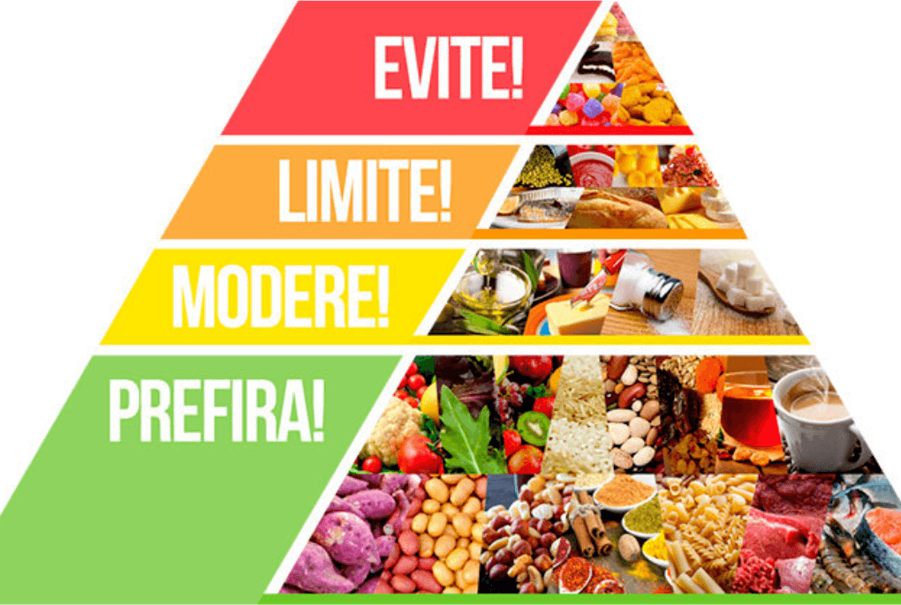

A SAÚDE COMEÇA COM UMA ALIMENTAÇÃO SAUDÁVEL
A Prefeitura Municipal de Fortaleza visando a saúde e informação dos fortalezenses, disponibiliza a tabela de IMC (Índice de Massa Corporal), para que seus habitantes se cuidem e se informem sobre como está seu peso.
O Índice de Massa Corporal (IMC) é uma das principais ferramentas, adotada inclusive pela Organização Mundial de Saúde (OMS), para calcular o chamado “peso ideal”. Obtido a partir do peso e da altura do indivíduo, o IMC também aponta níveis de magreza e obesidade, que são usados para nortear o trabalho de profissionais de saúde e de educadores físicos.
Índices abaixo de 18.5 não são considerados saudáveis segundo a OMS, entretanto, a pessoa pode muito bem apresentar um biotipo longilíneo e ser saudável. Indivíduos com IMCs entre 18.5 e 25 são considerados normais; nesse caso, a necessidade de emagrecer é, na maioria das vezes, de ordem estética. Entre 25 e 30, o indivíduo é considerado acima do peso, apresentando maiores chances de apresentar complicações, como diabetes, hipertensão arterial e hipercolesterolemia. Pessoas com IMCs acima de 30 são consideradas obesas, por isso, em virtude do alto risco de complicações metabólicas, é extremamente recomendável procurar um médico.
Hábitos alimentares saudáveis constituem um dos principais pilares para um estilo de vida saudável estando associados a diversos benefícios: prevenção e controle de doenças crônicas não transmissíveis (DCNT – obesidade, diabetes, hipertensão, doenças cardiovasculares e alguns tipos de câncer); funcionamento adequado do sistema imunológico; mais disposição para atividades do cotidiano e prática de atividades físicas; desenvolvimento da memória e da capacidade de aprendizado; melhora da qualidade do sono; autocuidado e sensação de bem estar, entre outros.
Uma alimentação adequada, saudável e sustentável é caracterizada pelo consumo diário e prioritário de alimentos in natura e minimamente processados, predominantemente de origem vegetal (frutas, verduras, legumes, cereais integrais, leguminosas e oleaginosas), sem excessos de óleos, gorduras, sal e açúcar.
CONFIRA COMO ESTÁ SEU ÍNDICE DE MASSA CORPORAL!